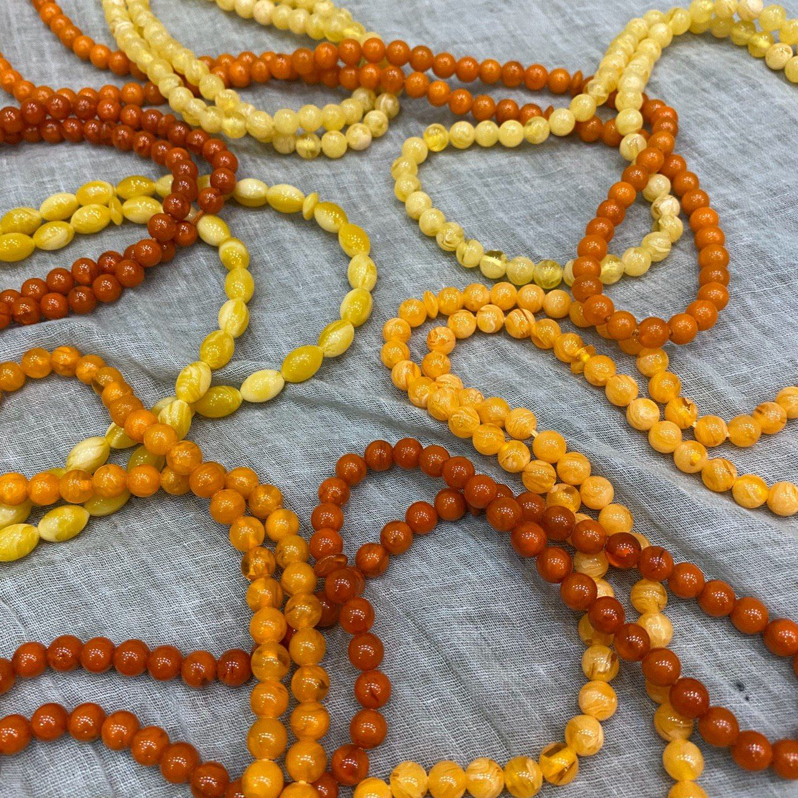

تسبیح کهربا
فارغ از زیباییهای کهربا، این سنگ ویژگیهای منحصربفردی مانند تاثیرگذاری بر درآمد دارد.

در ادامه به معرفی کوتاهی از این سنگ میپردازیم:

کهربا
- ابتدا مهم است بدانیم که این سنگ، سنگ ماه اردیبهشت است.
- سنگ کهربا از فسیل صمغ درختان کاج که به رنگ زرد مایل به قهوهای عسلی است تشکیل میشود. و حدود 50 میلیون سال قدمت دارد.
- کهربا از جمله سنگهای شفابخش و بسیار متنوع و نیرومند است، که برای اثرگذاری بر آلرژیها استفاده میشود.
- همچنین این سنگ بر درآمد در زمان انجام معاملات اثرگذار است.
- اینها گوشهای از ویژگیهای جذاب این سنگ زیباست.
کهربا
مروری بر خواص، نکات و ویژگیهای سنگ کهربا